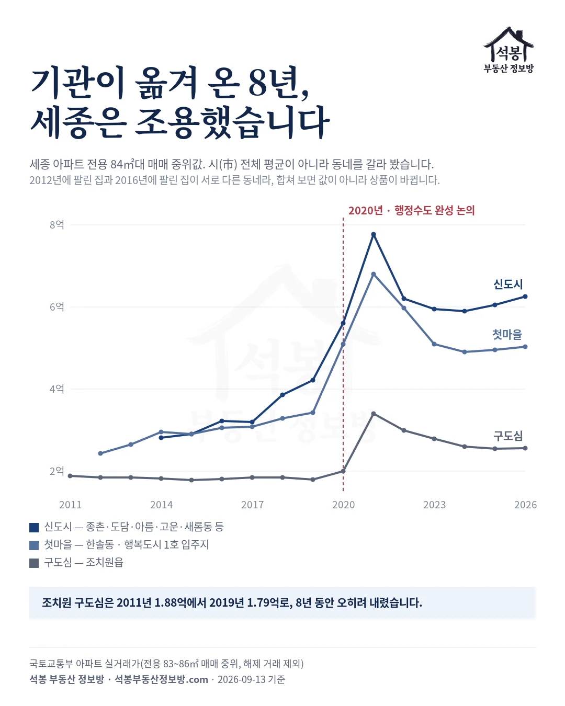
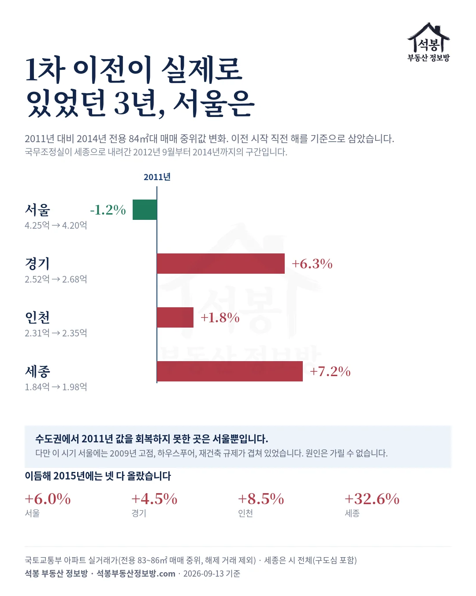
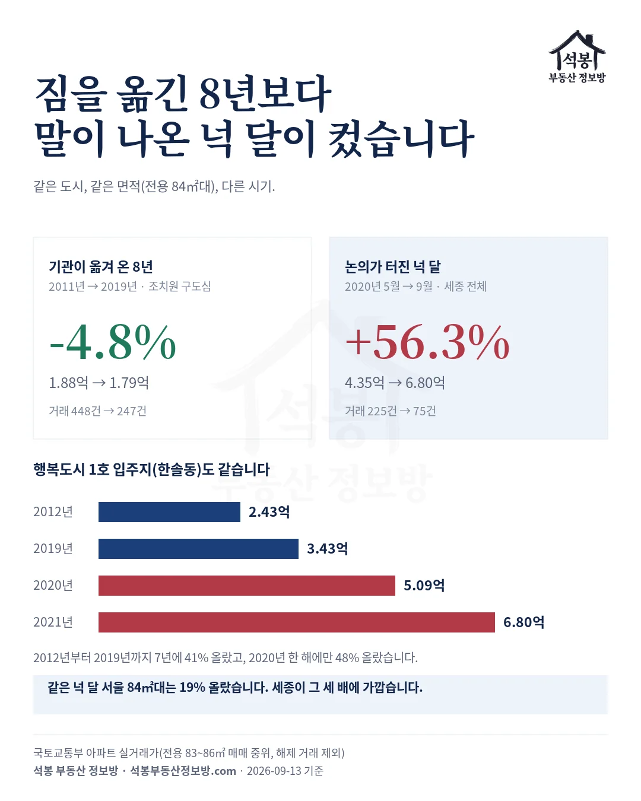
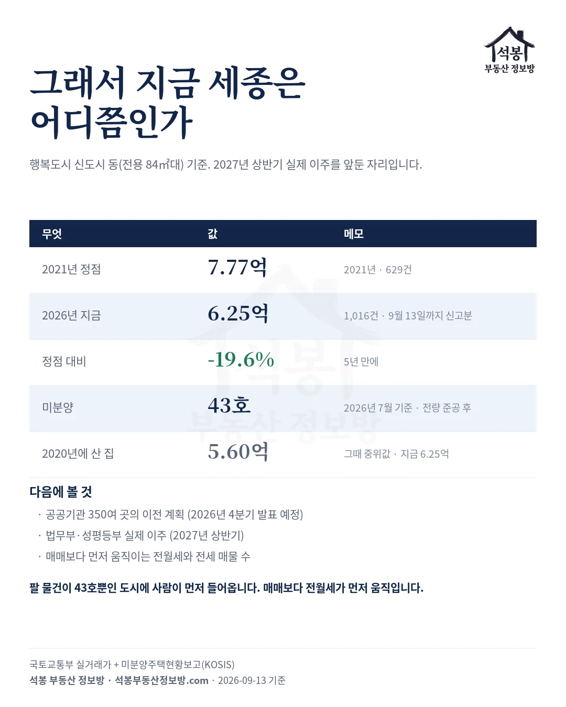

2026년 9월 3일 한성숙 국무총리가 2차 행정·공공기관 이전 계획을 발표했습니다. 수도권에 남은 중앙행정기관은 2027년 상반기부터 세종으로, 수도권 공공기관 350여 곳은 2026년 4분기에 계획을 내고 2027년부터 혁신도시를 중심으로 옮깁니다(발표 전문). 발표 직후 같은 질문이 다시 돌기 시작했습니다. 세종을 사야 하나, 서울을 팔아야 하나.
이 질문에는 답할 방법이 하나 있습니다. 1차 이전이 실제로 있었기 때문입니다. 2012년부터 2021년까지 43개 기관이 세종으로 내려갔고, 그동안 서울과 세종에서 아파트가 얼마에 팔렸는지 기록이 남아 있습니다. 그 기록을 열어 봤습니다.
하나. 세종 집값을 그냥 평균 내면 틀립니다
먼저 걸린 것이 있습니다. 세종시 전체 중위값으로 2012년과 2016년을 견주면 값이 아니라 상품이 바뀝니다. 2012년과 2013년에 팔린 세종 아파트 중 준공 2년 이내인 집은 3%와 7%뿐이었고, 가장 많이 거래된 집의 건축년도는 2008년, 2000년, 1996년이었습니다.
행복도시가 아니라 조치원 등 기존 시가지의 옛 아파트가 팔리고 있었다는 뜻입니다. 법정동별로 첫 거래 시점을 보면 더 분명합니다. 조치원읍과 금남면은 2011년부터, 한솔동(첫마을)은 2012년부터, 종촌동과 도담동과 아름동은 2014년부터, 고운동은 2015년, 새롬동은 2017년, 반곡동은 2018년에 거래가 시작됩니다.
그래서 세종을 구도심, 첫마을, 신도시 세 갈래로 갈라 각각 안에서 시계열을 봤습니다. 합쳐 놓은 숫자 하나보다 이 편이 정직합니다.

가입하시면 지역 시장조사 보고서(약식)를 2회 무료로 요청하실 수 있습니다.
둘. 기관이 내려온 8년, 세종은 조용했습니다
조치원 구도심은 2011년 1.88억에서 2019년 1.79억으로, 8년 동안 오히려 내렸습니다. 국무조정실을 시작으로 부처가 차례로 내려오고 청사가 한 동씩 늘어나는 내내 원도심 84㎡대 아파트값은 그 자리였습니다. 대표 단지인 조치원죽림자이도 같은 흐름입니다.
행복도시 1호 입주지인 한솔동도 크게 다르지 않았습니다. 2012년 2.43억에서 2019년 3.43억으로 7년에 41% 올랐습니다. 연으로 나누면 5% 남짓이고, 같은 기간 서울 84㎡대가 4.09억에서 7.60억으로 86% 오른 것과 비교하면 완만합니다. 첫마을7단지가 그 동네 대표 단지입니다.
신도시 동들도 2014년 2.82억으로 시작해 2019년 4.22억이었습니다. 가재마을5단지가 있는 종촌동, 새뜸마을10단지가 있는 새롬동 같은 곳입니다. 새 도시가 올라가고 공무원이 이사 오는 동안, 값은 계단을 하나씩 올랐지 2020년처럼 뛰지는 않았습니다.
셋. 그 3년 서울은 어땠나
이제 반대쪽입니다. 이전 시작 직전인 2011년과 이전 3년째인 2014년을 견주면, 서울 84㎡대 매매 중위값은 4.25억에서 4.20억으로 1.2% 내렸습니다. 같은 기간 경기는 6.3%, 인천은 1.8% 올랐습니다.
| 연도 | 서울 | 경기 | 인천 | 세종(시 전체) |
|---|---|---|---|---|
| 2011년 | 4.25억 | 2.52억 | 2.31억 | 1.84억 |
| 2012년 | 4.09억 | 2.45억 | 2.18억 | 1.85억 |
| 2013년 | 4.05억 | 2.57억 | 2.20억 | 1.85억 |
| 2014년 | 4.20억 | 2.68억 | 2.35억 | 1.98억 |
| 2015년 | 4.45억 | 2.80억 | 2.55억 | 2.62억 |
수도권에서 2011년 값을 회복하지 못한 곳은 서울뿐입니다. 여기까지만 보면 "행정수도가 서울을 눌렀다"고 쓰고 싶어집니다. 그런데 그렇게 쓰면 안 됩니다.
이 시기 서울에는 2009년에 찍은 고점(4.48억)이 있었고, 하우스푸어라는 말이 매일 신문에 나왔고, 재건축 규제가 걸려 있었습니다. 서울이 눌린 이유가 무엇인지 이 데이터로는 가릴 수 없습니다. 그리고 결정적으로, 사람을 받은 세종도 그 3년 동안 시 전체로 7.2% 올랐을 뿐이고, 구도심은 오히려 3.2% 내렸습니다. 한쪽이 빠져나가 다른 쪽으로 갔다면 받은 쪽이라도 움직였어야 하는데, 그러지 않았습니다.

넷. 값이 뛴 해는 2020년이었습니다
세 갈래가 한꺼번에 뛴 해가 있습니다. 2020년입니다. 세종 84㎡대 중위값(시 전체)은 2020년 5월 4.35억에서 9월 6.80억으로, 넉 달에 56.3% 올랐습니다.
그 사이에 무슨 일이 있었을까요. 2020년 7월 20일 국회 본회의에서 여당 원내대표가 교섭단체 대표연설로 행정수도 완성을 제안했습니다. 회의록에 이렇게 남아 있습니다.
"국회가 통째로 세종시로 이전해야 합니다. 아울러 더 적극적인 논의를 통해 청와대와 정부부처도 모두 이전해야 합니다. 그렇게 했을 때 서울·수도권 과밀과 부동산 문제를 완화할 수 있습니다."
이 글이 던진 질문이 바로 저 문장에서 나왔습니다. 행정수도를 옮기면 서울 집값이 잡힌다는 주장입니다. 그 말이 나온 넉 달 동안 서울 84㎡대도 7.56억에서 8.99억으로 19% 올랐는데, 세종은 그 세 배에 가까운 56%가 뛰었습니다.
구도심도 예외가 아니었습니다. 8년 동안 내리기만 하던 조치원이 2020년 2.00억, 2021년 3.40억으로 뛰었습니다. 한솔동은 2019년 3.43억에서 2020년 5.09억으로 한 해에 48% 올랐고, 신도시는 2021년 7.77억까지 갔습니다.
정리하면 이렇습니다. 짐을 옮긴 8년보다 옮기자는 말이 나온 넉 달이 컸습니다. 기관은 2012년부터 순서대로 내려왔는데 값은 그때 안 움직였고, 국회도 청와대도 아직 옮기지 않은 2020년에 뛰었습니다.

다섯. 그래서 이번에는 무엇이 다른가
2020년에 올라탄 사람은 지금 어디쯤 있을까요. 신도시 동 기준으로 2021년 7.77억이 정점이었고 2026년은 6.25억입니다. 정점 대비 19.6% 아래입니다. 2020년 중위값 5.60억에 산 집은 아직 그 위에 있지만, 2021년에 산 집은 5년째 회복하지 못했습니다.
다만 이번 2차는 1차와 성격이 다릅니다. 1차는 허허벌판에 도시를 지으면서 사람을 채운 일이었고, 2차는 이미 다 지어진 도시에 사람만 넣는 일입니다. 세종 미분양은 2026년 7월 기준 43호이고 그마저 전량 준공 후 물량입니다. 팔 물건이 43호뿐인 세종에 법무부와 성평등부가 2027년 상반기 먼저 내려오고, 검찰청과 경찰청은 청사를 지은 뒤 따라옵니다.
그러면 압력은 분양가가 아니라 전월세와 기존 재고로 먼저 갈 것으로 보입니다. 2027년 상반기 실제 이주가 시작될 때 매매보다 전세 매물 수와 전월세 시세가 먼저 움직일 가능성이 높습니다.

다음 발표를 볼 때 세 가지
첫째, 발표와 이주를 갈라서 보십시오. 1차에서 값을 움직인 것은 짐이 아니라 말이었습니다. 9월 3일 발표는 2020년보다 훨씬 구체적인데도(연도와 기관이 나왔습니다) 세종 신도시는 2026년 1월 6.62억에서 8월 6.19억으로 내려오는 흐름이었고, 발표 뒤에도 뛴 조짐은 없습니다. 시장이 2020년을 한 번 겪었기 때문일 수 있습니다.
둘째, 특별공급이 살아나는지 보십시오. 9월 3일 기자회견에서 국토교통부 장관은 특공에 대해 "검토를 할 시간이 필요하고 의견 수렴이 필요하다"고 했고, 이번 발표 내용에서는 빠졌다고 밝혔습니다. 1차 때는 이전기관 종사자에게 분양물량을 우선 공급하다 2021년에 폐지된 제도라, 부활 여부와 비율이 곧 신호가 됩니다.
셋째, 매매보다 전월세를 먼저 보십시오. 받는 쪽 도시에 재고가 없으면 값은 전세부터 밀립니다. 공공기관 350여 곳의 행선지가 2026년 4분기에 나오면 세종뿐 아니라 혁신도시들도 같은 순서를 밟게 됩니다.
2020년 7월 20일의 그 주장, 옮기면 서울 부동산 문제가 완화된다는 말에 1차의 기록이 주는 답은 이렇습니다. 기관이 실제로 내려간 8년 동안 서울도 세종도 거의 움직이지 않았고, 움직인 것은 옮기자는 말이 나왔을 때였습니다. 2차가 1차와 같을지 다를지는 2027년 상반기에 처음 확인됩니다.
원자료: 국토교통부 아파트 실거래가(2006년 1월~2026년 9월 13일 신고분, 해제 거래 제외) + 국토교통부 「미분양주택현황보고」(KOSIS, 2026년 7월 말 기준) + 국무총리 「행정·공공기관 이전 및 공공기관 기능 개혁 관련 기자회견」 속기록(2026년 9월 3일, 대한민국 정책브리핑) + 제380회 국회(임시회) 제2차 본회의 회의록(2020년 7월 20일, 국회회의록시스템)
값은 전용 83~86㎡(25.1~26.0평) 매매 중위값. 세종은 조치원읍(구도심), 한솔동(첫마을), 행복도시 나머지 동(신도시)으로 갈랐고 표의 세종은 시 전체
연도별 표본은 세종 구도심 58~670건, 첫마을 13~281건, 신도시 50~2,252건, 서울 2,723~40,339건
⚠️2012년 한솔동은 13건, 2013년은 17건으로 표본이 얇아 흐름만 보시기 바랍니다. 2026년은 9월 13일까지 신고분이라 미완성입니다. 투자 권유가 아닙니다.